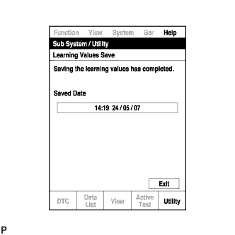
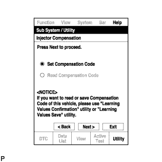
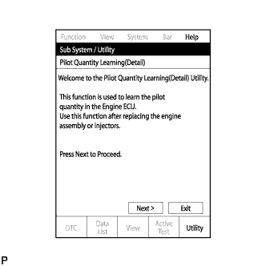

СИСТЕМА ECD (для моделей без DPF) > РЕГИСТРАЦИЯ |
| 1. ПОДТВЕРЖДЕНИЕ ЗНАЧЕНИЙ ПАРАМЕТРОВ НАСТРОЙКИ |
Подсоедините портативный диагностический прибор к DLC3.
Включите зажигание (IG) и портативный диагностический прибор.
Войдите в следующие меню: Powertrain / Engine and ECT / Utility / Learning Values Confirmation.
Нажмите "Next".
 |
Нажмите "Next" еще раз, чтобы продолжить работу.
Выберите параметр для проверки и нажмите "Next".
После отображения следующего экрана проверьте правильность выводимых данных и нажмите "Exit".
| 2. СОХРАНЕНИЕ ЗНАЧЕНИЙ ПАРАМЕТРОВ НАСТРОЙКИ |
Подсоедините портативный диагностический прибор к DLC3.
Включите зажигание (IG) и портативный диагностический прибор.
Войдите в следующие меню: Powertrain / Engine and ECT / Utility / Learning Values Save.
Нажмите "Next".
Нажмите "Next" еще раз, чтобы продолжить работу.
Выберите все подлежащие замене устройства и нажмите "Next". Если ни одно из отображаемых устройств не подлежит замене, нажмите "Next", не выбирая ничего.
При отображении экрана подтверждения перезаписи нажмите "Overwrite".
|  |
После завершения операции сохранения проверьте дату и время выполнения операции, а затем нажмите "Exit".
| 3. ЗАПИСЬ ЗНАЧЕНИЙ ПАРАМЕТРОВ НАСТРОЙКИ |

 |
Подсоедините портативный диагностический прибор к DLC3.
Включите зажигание (IG) и портативный диагностический прибор.
Войдите в следующие меню: Powertrain / Engine and ECT / Utility / Learning Values Write.
Нажмите "Next".
Нажмите "Next" еще раз, чтобы продолжить работу.
В случае отображения экрана "Error Learning Values Write" (ошибка записи значений параметров настройки), указывающего на некорректность или отсутствие сохраненных значений, выполните операцию "Learning Values Save" повторно.
Проверьте дату и время выполнения операции сохранения, а затем нажмите "Yes".
Проверьте правильность выводимых данных, а затем нажмите "Next".
При отображении на экране диагностического прибора каких-либо указаний вручную выполните процедуру регистрации всех необходимых компенсационных кодов и значений параметров настройки в ECM.
Удалите коды DTC.
| 4. ВВОД КОМПЕНСАЦИОННОГО КОДА ФОРСУНКИ В ECM |
После замены одной или нескольких форсунок в сборе новыми введите в ЕСМ компенсационные коды форсунок, как описано ниже:
Введите в портативный диагностический прибор компенсационные коды, отпечатанные на головках новых форсунок в сборе.
С помощью диагностического прибора введите компенсационные коды новых форсунок в ЕСМ.
Выключите прибор и выключите зажигание.
Подождите не менее 30 секунд.
Включите зажигание (IG) и включите портативный диагностический прибор.
Выполните настройку объема предварительного впрыска.
С помощью диагностического прибора удалите код DTC Р1601 из памяти ЕСМ (Нажмите здесь).
Зарегистрируйте компенсационные коды.
Подсоедините портативный диагностический прибор к DLC3.
Включите зажигание (IG).
Включите портативный диагностический прибор.
Войдите в следующие меню: Powertrain / Engine and ECT / Utility / Injector Compensation.
Нажмите "Next".
Нажмите "Next" еще раз, чтобы продолжить работу.
|  |
Выберите "Set Compensation Code" (установить компенсационный код).
Нажмите "Next".
Выберите номер цилиндра, соответствующего компенсационному коду форсунки, который требуется зарегистрировать.
Нажмите "Next".
Зарегистрируйте компенсационный код.
Удостоверьтесь, что на экране отображается правильный компенсационный код, сравнив его с 30-значным буквенно-цифровым кодом на головке форсунки в сборе.
Нажмите "Next", чтобы зарегистрировать компенсационный код в ЕCM.
Чтобы зарегистрировать другие компенсационные коды, нажмите "Next". Чтобы завершить регистрацию, нажмите "Exit".
Выключите зажигание, а затем выключите диагностический прибор.
Подождите не менее 30 секунд.
Установите выключатель зажигания в состояние ON (ВКЛ) (IG) и включите диагностический прибор.
Выполните настройку объема предварительного впрыска.
С помощью диагностического прибора удалите код DTC Р1601 из памяти ЕСМ (Нажмите здесь).
| 5. НАСТРОЙКА ОБЪЕМА ПРЕДВАРИТЕЛЬНОГО ВПРЫСКА |
Подсоедините портативный диагностический прибор к DLC3.
Запустите двигатель.
Включите портативный диагностический прибор.
Войдите в следующие меню: Powertrain / Engine and ECT / Utility / Pilot Quantity Learning.
Нажмите "Next".
Нажмите "Next" еще раз, чтобы продолжить работу.
Убедитесь, что отображается экран атмосферного давления.
Проверьте отображаемое атмосферное давление.
Если атмосферное давление находится в пределах номинального диапазона, перейдите к следующему экрану.
Проверьте состояние двигателя и подождите, пока появится возможность произвести настройку.
| Информация на дисплее прибора | Номинальный режим |
| Coolant Temp | 70 - 100°C |
| Intake Air | 10 - 120°C |
| Fuel Temperature | 30 - 96°C |
| Fuel Return Temp | 64 - 130°C |
| Battery Voltage | 10 В или выше |
| Reju Pilot Quantity Learning | READY |
Следуя подсказкам на экране, повторяйте следующие действия, пока не произойдет смена экрана: запустите двигатель на холостом ходу, увеличьте частоту вращения коленчатого вала, по крайней мере, до 3000 об/мин, в течение не более 2 с, а затем позвольте двигателю вернуться в режим холостого хода.
| Состояние настройки | Состояние контрольной лампы включения свечей накаливания |
| Условия, необходимые для начала настройки, не выполняются | Мигает с интервалами 0,5 с |
| Условия, необходимые для начала настройки, выполняются | Мигает с интервалами 1 с |
| Увеличение частоты вращения коленчатого вала (во время настройки) | Мигает с интервалами 1 с |
| Настройка завершена | Выкл |
| Настройка отменена | Мигает с интервалами 1,5 с |
| Настройка отменена (характер мигания обеспечивает индикацию номера неисправного цилиндра) | Мигает с интервалами 0,8 с (интервалы между циклами мигания, представляющими номер неисправного цилиндра, составляют 2,3 с) |
После смены экрана нажмите "Exit".
Выключите зажигание, а затем выключите диагностический прибор.
Подождите не менее 10 секунд.
Установите выключатель зажигания в состояние ON (ВКЛ) (IG) и включите диагностический прибор.
Сбросьте коды DTC (Нажмите здесь).
Выключите зажигание.
| 6. НАСТРОЙКА ОБЪЕМА ПРЕДВАРИТЕЛЬНОГО ВПРЫСКА (ТОЧНАЯ) |
Подсоедините портативный диагностический прибор к DLC3.
Запустите двигатель.
Включите портативный диагностический прибор.
Войдите в следующие меню: Powertrain / Engine and ECT / Utility / Pilot Quantity Learning (Detail).
|  |
Нажмите "Next".
Нажмите "Next" еще раз, чтобы продолжить работу.
Убедитесь, что отображается экран атмосферного давления.
Проверьте отображаемое атмосферное давление.
Если атмосферное давление находится в пределах номинального диапазона, перейдите к следующему экрану.
Проверьте состояние двигателя и подождите, пока появится возможность произвести настройку.
| Информация на дисплее прибора | Номинальное значение / Номинальный режим |
| Coolant Temp | 70 - 100°C |
| Intake Air | 10 - 120°C |
| Fuel Temperature | 30 - 96°C |
| Fuel Return Temp | 64 - 130°C |
| Battery Voltage | 10 В или выше |
| Reju Pilot Quantity Learning | READY |
Следуя подсказкам на экране, повторяйте следующие действия, пока не произойдет смена экрана: запустите двигатель на холостом ходу, увеличьте частоту вращения коленчатого вала, по крайней мере, до 3000 об/мин, в течение не более 2 с, а затем позвольте двигателю вернуться в режим холостого хода.
| Состояние настройки | Состояние контрольной лампы включения свечей накаливания |
| Условия, необходимые для начала настройки, не выполняются | Мигает с интервалами 0,5 с |
| Условия, необходимые для начала настройки, выполняются | Мигает с интервалами 1 с |
| Увеличение частоты вращения коленчатого вала (во время настройки) | Мигает с интервалами 1 с |
| Настройка завершена | Выкл |
| Настройка отменена | Мигает с интервалами 1,5 с |
| Настройка отменена (характер мигания обеспечивает индикацию номера неисправного цилиндра) | Мигает с интервалами 0,8 с (интервалы между циклами мигания, представляющими номер неисправного цилиндра, составляют 2,3 с) |
После смены экрана нажмите "Exit".
Выключите зажигание, а затем выключите диагностический прибор.
Подождите не менее 10 секунд.
Установите выключатель зажигания в состояние ON (ВКЛ) (IG) и включите диагностический прибор.
Сбросьте коды DTC (Нажмите здесь).
Выключите зажигание.
| 7. УДАЛЕНИЕ ЗНАЧЕНИЯ ПАРАМЕТРА НАСТРОЙКИ ОБЪЕМА ПРЕДВАРИТЕЛЬНОГО ВПРЫСКА |
Подсоедините портативный диагностический прибор к DLC3.
Включите зажигание (IG) и включите портативный диагностический прибор.
Войдите в следующие меню: Powertrain / Engine and ECT / Utility / Pilot Quantity Learning Value Clear
Нажмите "Next".
Убедитесь, что отображается экран атмосферного давления.
Проверьте отображаемое атмосферное давление.
Перейдите к следующему экрану.
Выберите цилиндры, для которых будут удалены значения параметров настройки.
После выбора цилиндров, у которых будут удалены значения параметров настройки, нажмите "Next", чтобы начать инициализацию.
После смены экрана нажмите "Exit".
Выключите прибор и выключите зажигание.
Подождите не менее 10 секунд.
Установите выключатель зажигания в состояние ON (ВКЛ) (IG) и включите диагностический прибор.
Сбросьте коды DTC (Нажмите здесь).
Выключите зажигание и оставьте автомобиль как есть, по крайней мере, на 30 с.
Включите зажигание (IG) на 1 с.
Войдите в следующие меню: Powertrain / Engine and ECT / DTC.
Считайте коды DTC.
Убедитесь, что коды DTC не выводятся.